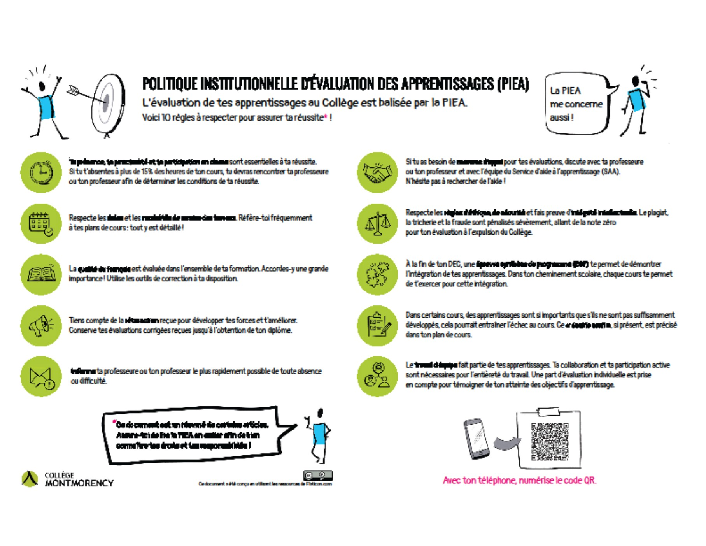

Présentation du cours

Le plan et la vue synoptique du cours
Note
Vous trouverez l’intégralité du plan de cours sur Moodle. C’est cette version que vous devrez consulter au cours de la session. Sur Moodle, vous trouverez également la vue synoptique du cours, qui permet d’avoir une vue d’ensemble des étapes de la session.
La pondération 1-2-3
La pondération d’un cours, le nombre d’heures en moyenne par semaine qu’un.e élève doit effectuer pour réussir le cours. Dans l’ordre, pour le cours 420-SN1-RE:
- 1 = le nombre d’heure de cours théorique en classe
- 2 = le nombre d’heures d’ateliers en classe
- 3 = le nombre d’heures de travail personnel en dehors de la classe
Les objectifs du cours, les attitudes à développer
voir plan de cours p.2
Les cours pour lesquels ce cours est préalable
voir plan de cours p.2
Les responsabilités de l’enseignante
- Fournir du matériel pédagogique.
- Créer un environnement d’apprentissage positif et inclusif qui favorise le respect mutuel et l’engagement des élèves.
- Aider les élèves à développer des compétences critiques et analytiques, ainsi que des compétences sociales et professionnelles.
- Communiquer efficacement avec les élèves concernant les progrès, les attentes et les préoccupations.
- Traiter tous les élèves avec équité et respect, et être sensible aux facteurs qui influencent leur apprentissage.
Les responsabilités de l’élève
- Les élèves doivent lire / visionner le matériel assigné avant la classe pour laquelle ils sont programmés.
- Assister aux cours et arriver à l’heure.
- Participer activement en classe.
- Effectuer les ateliers.
- Demander de l’aide tôt s’ils ont des problèmes.
 .
Le contexte d’apprentissage
voir plan de cours p.3
Les évaluations des apprentissages
voir plan de cours p.6
| Évaluation | Date évaluation/remise | Pondération |
|---|---|---|
| 10 quiz Moodle | Hebdomadaires | 20% |
| Minitest | Semaine #4 | 10% |
| Examen | Semaine #10 | 30% |
| Projet intégrateur | Semaine #15 | 40% |
Les règles d’évaluation des apprentissages
voir plan de cours p.7-8
Pause: 5 minutes
 .
.